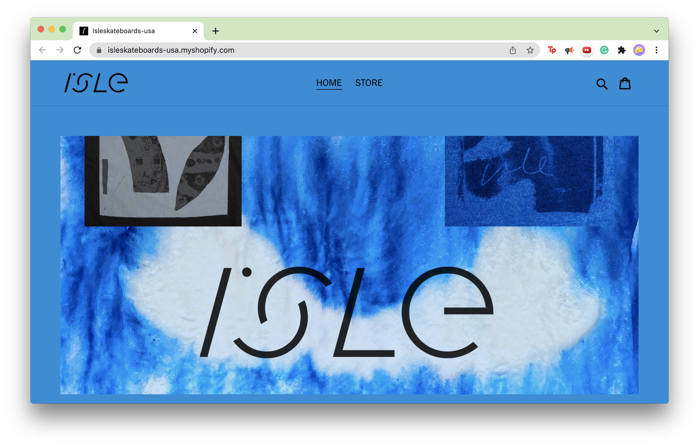
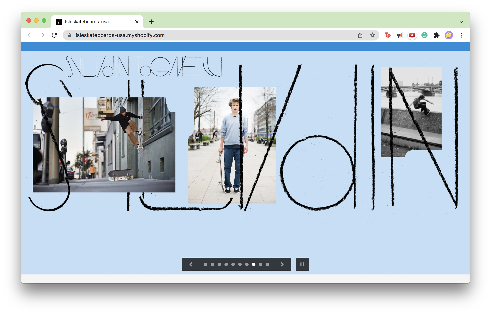
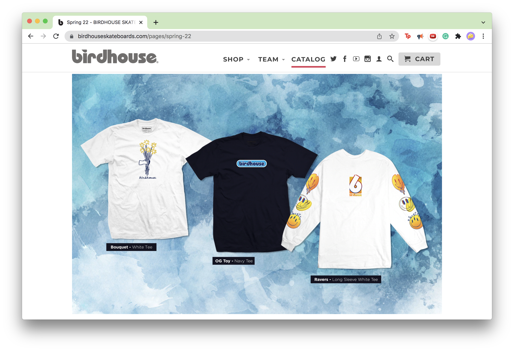
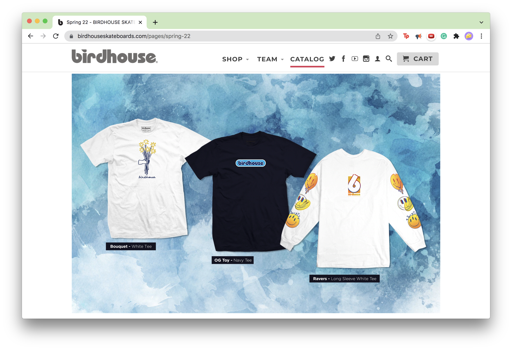
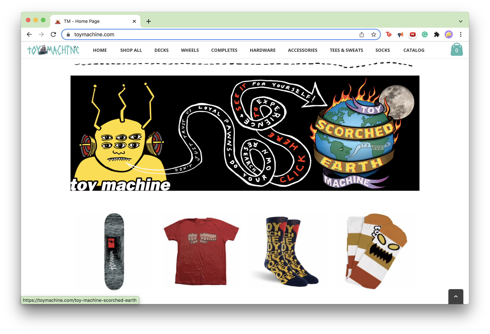

Final project proposal
Introduction
TittFlip
This local brand made its name by bringing female skaters together for comradery and a safe space. Since their start 2021, they’ve grown their members and their outreach. They host events, both skate driven and others, they have their own merch, including shirts and stickers, and they’re looking to get into the zine world. The groups goal is to keep supporting their local community and expand their reach where they can, in order to possibly turn into their own official skate collective.
Target audience
Being a female driven organization, the brand caters to mostly to those who identify as a woman and their allies. The skate component brings in those who skateboard, roller blade, roller skate, and whoever else frequents their local skate parks. Skating is generally seen as an ‘alternative’ hobby so this site should also cater to those who consider themselves ‘punk’ or ‘grungy’. The groups goal is to bring together those marginalized in the skating community, so although it should be edgy, it should still be inviting for those that are looking for a safe space.
The audience of the site is most likely there to get involved with the group, get merch, or learn about events. This calls for at least three pages besides the index page to cover those needs well. A page will be set up for how to contact the group and what different opportunities there are for involvement with the brand. This could be a place for photographers, brands, designers, and other skaters to hop in on whatever TittFlip’s current project is. Another page will be dedicated to the merchandise that they sell as well as bios on the artists who are creating the designs. The general following the group has on social media are very artistic so the website should celebrate that and bring it to the forefront since that’s what its customers care about. The last tab will be an interactive calendar for the dates of upcoming events and where they will be held. Most viewers are looking for immediate information when they go to a website so having a whole page for just that makes their navigating easier.
Comparative analysis
Isle
 Birdhouse
 

Toy Machine

Website content
Home
We're skaters. We also happen to be female, non-binary, queer, and sick as hell. But at the end of the day, we’re just skaters looking for a place to be. People who act like they own the parks, who talk down to those that don’t look like them, who assume they’re better without even knowing you or your skills, those people don’t deserve to have the power to ruin it for the rest of us. TittFlip was created specifically to make a space for those who feel marginalized in other areas of the skate community. We’re not trying to take down other skating groups, we just want to make a new group for a new set of needs.
Being a group of misfits, we look for opportunities to help people in any way we can. In giving back to the community, we’re not only helping others right now, but also future generations just like us to have a better space to start with. TittFlip is just friends helping friends, whether it be with skating, safe spaces, or gathering resources. We’re an open group looking to expand our membership to anyone who’s down for the cause. If any of our message resonates with you, congratulations! You’re now part of TittFlip
[TittFlips founding members at their local Brentwood skate park smiling and posing for the picture.]
Our Store
Our group has some serious talent, so why not let others enjoy it too! Each design is made by one of our many creative friends. Bio's can be found on each artist as well as their personal links if they have any at the bottom of the page.
Shirts
Hats
Bags
Stickers
Prints
[Members of TittFlip modeling in their merchandise.]
Get Involved
Come skate with us! Wether youre a pro or have never even touched wheels before, this is the group for you. We'll help you learn and have fun while doing it. This is a no stress no judgement environment so bring us your worst!
You dont even have to skate to be a part of the crew. If you have a skill you'd like to bring to the table or you just want some chill people to hang with, let us know! We could always use more photographers, artists, and people who are into community outreach. Even if you don't know how you want to participate, you should still reach out! There's always room for everyone.
Number
[Member of TittFlip teaching a kid how to skateboard.]
Happening Now
Check out the calendar for all up-coming events and hang outs. Most are hosted by TittFlip and the rest are from groups we highly recommend checking out.
[Skateboarders and roller skaters dropping into a skate parks bowl.]